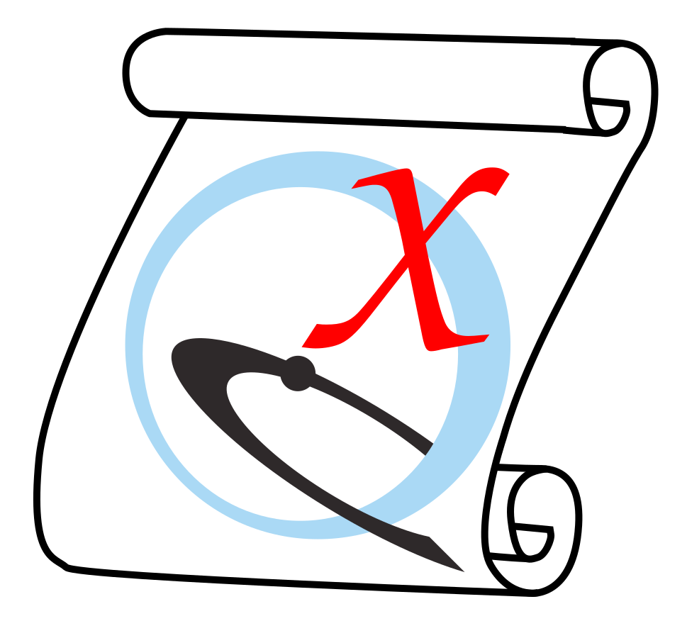

Schol-AR
is a website and associated software that allows users to create
augmented reality overlays for their publication images.
Users can create a Schol-AR account free of charge and
upload 3D models from ChimeraX, which can then be linked to figures
in a publication for viewing the associated 3D augmentations
with a smartphone or web-based PDF viewer. Schol-AR is described in:
Integrating data directly into publications with augmented reality and
web-based technologies – Schol-AR.
Ard T, Bienkowski MS, Liew S, Sepehrband F, Yan L, Toga AW.
Sci Data 9(1):298 (2022).
See also:
Schol-AR
YouTube videos
The scholar command interfaces with the
Schol-AR website
to allow:
- creating a user account
- for a user, creating one or more projects,
each corresponding to a single publication, poster, or presentation
- within a project, creating one or more augmentations,
each consisting of a 3D model to show in augmented reality and the
corresponding target image that appears in the project
(e.g., a figure in the paper)
- generating QR codes for each project:
- a permanent, public QR code that should be included in the
publication, poster, or presentation
so that viewers can access the associated Schol-AR augmentations
- a private QR code that acts like a password to edit the project;
it should be kept private and is not guaranteed to be permanent
Deleting projects and augmentations, however, can only be done at the
Schol-AR website,
The most common approach will be to use the
ScholAR graphical interface.
However, its functions are implemented as several scholar subcommands:
Users who do not yet have a Schol-AR account should first go to the
Schol-AR website,
register for an account, log in to the account, go the Profile settings,
and then click “Get API Token.”
The username, password, and API token should be noted down
for future access to the account.
•
scholar login local-username
[ API-token ]
Log in to the associated Schol-AR account and set up local files as needed.
Users who have obtained an API token as described above
but not yet created a local username must supply both a
local-username and the obtained API token.
The local username
is used by ChimeraX as a convenient alias to the API token
and does not need to be the same as the username at the
Schol-AR website.
However:
|
The local username and any other user-supplied strings in
scholar commands must not contain any characters other than
letters, numbers, and spaces.
Note also that strings containing spaces should be enclosed in
quotation marks.
|
Users who have already created a local username and linked it to their
API token can simply give that local username to log in.
Technical details: Creating a new local username
creates a directory inside of app_dirs_unversioned called Schol-AR if it
does not already exist. Inside the Schol-AR folder, a user_info.json file
that stores all usernames and API tokens for one Chimerax installation
will be created/updated, and a folder titled with the username will be created.
Inside the username-titled folder, projects_info.json is created/updated to
store data for all of the projects of that user.
•
scholar project
local-username
project-title
[ projectType paper | poster | book | other ]
[ discUrl project-URL ]
Create a new project by giving a new project-title
or choose an existing project by giving a project-title
that was created earlier. Specifying the project type
and supplying an URL to be associated with the project, such as a link
to a publication or institute, are optional.
Technical details: Creating a new project updates the projects_info.json
in the user folder, and a folder inside of the username folder will be created
and titled with the project’s 10-character identifier string.
Inside that folder, an augmentations_info.json file is created to hold data
for all of the project's augmentations. If an existing project is specified,
augmentations_info.json will be updated as needed to synchronize
with the project status at the
Schol-AR website.
•
scholar augmentation
local-username
project-title
augmentation-title
[ augmentationType model ]
Create a new augmentation by giving a new augmentation-title
or choose an existing augmentation by giving an augmentation-title
that was created earlier. The project must already exist.
Currently only one type of augmentation can be created via ChimeraX
(3D model in GLB format), so augmentationType does not need to be
given.
Technical details:
Creating a new augmentation automatically runs
scholar uploadAugFiles
to upload the associated files and information to the
Schol-AR website.
Locally, the project augmentation_info.json file is updated, and a
folder named with the 4-character augmentation ID is created.
In turn, it contains three more folders:
augmented_file (for the 3D model GLB file),
cxs (for an associated ChimeraX session file,
see scholar saveAugSession),
and target_image (for the target image PNG file). Finally,
scholar saveAugSession
is automatically run to save the current ChimeraX session to the cxs folder.
A current limitation is that the GLB file size cannot exceed 30MB.
Specifying an existing augmentation will update local files
if/as needed to synchronize with the
Schol-AR website.
•
scholar downloadQR
local-username
project-title
Download the project QR files from the
Schol-AR website
to the local directory structure, within
Schol-AR/username/project_id/qr and then /admin or /pub for the private
and public QR code images, respectively.
This is done so that the QR codes can be displayed by the
ScholAR graphical interface.
•
scholar downloadAugFiles
local-username
project-title
augmentation-title
[ targetImage true | false ]
[ augmentedFile true | false ]
Download augmentation files from the
Schol-AR website
to the local directory structure, either the target image (default true),
or the 3D model (default false, do not download), or both.
•
scholar uploadAugFiles
local-username
project-title
augmentation-title
[ targetImage true | false ]
[ augmentedFile true | false ]
Upload augmentation files from the local directory structure
(such as after modifications in ChimeraX) to the
Schol-AR website,
either the target image (default false, do not upload), or the 3D model
(default true), or both.
A current limitation is that the 3D model file size cannot exceed 30MB.
|
The target image must match that in the media seen by the viewers
(e.g., the corresponding publication figure), so it is
very important not to accidentally update/overwrite it
when the appearance in ChimeraX is different.
There is no way to recover the previous target image with the ChimeraX
ScholAR tool, scholar
command, or at the
Schol-AR website.
If the target image no longer matches the published image,
others will no longer be able to view the associated augmentation.
|
•
scholar saveAugSession
local-username
project-title
augmentation-title
[ filePath existing-session-file ]
Save a ChimeraX session file
in the augmentation's /cxs folder, either generated from the current state
of ChimeraX (default) or by copying an existing session file specified
with the filePath option, where existing-session-file is the desired pathname (directory location and filename)
or the word browse
to specify it interactively in a file browser window.
•
scholar openAugSession
local-username
project-title
augmentation-title
Open the ChimeraX session file, if any,
found in the augmentation's /cxs folder.
•
scholar storeTargetImage
local-username
project-title
augmentation-title
pathname
Save a copy of the augmentation's target image PNG file
to a location specified by the user, where pathname is the
desired pathname (directory location and filename)
or the word browse
to specify it interactively in a file browser window.
•
scholar storeModel
local-username
project-title
augmentation-title
pathname
Save a copy of the augmentation's 3D model GLB file
to a location specified by the user, where pathname is the
desired pathname (directory location and filename)
or the word browse
to specify it interactively in a file browser window.
•
scholar storeQRImage
local-username
project-title
pathname
Save a copy of the project's public QR code image file
to a location specified by the user, where pathname is the
desired pathname (directory location and filename)
or the word browse
to specify it interactively in a file browser window.
•
scholar storeAllAugFiles
local-username
project-title
augmentation-title
existing-directory
Save copies of the augmentation's target image PNG file and 3D model GLB file
as well as the project's public QR code image file
to an existing directory (folder) specified by the user.
•
scholar cleanLocal
[ username local-username ]
Remove all local files corresponding to augmentations and projects
that have been deleted by the users at the
Schol-AR website.
Currently, such deletions should be initiated at the website; deleting
files locally does not change what is in the website account. Specifying a username argument will remove all local files associated only with that username.
•
scholar removeUser
local-username
Remove a ChimeraX Schol-AR user and all related ChimeraX stored data. This action cannot be undone.
UCSF Resource for Biocomputing, Visualization, and Informatics /
October 2024